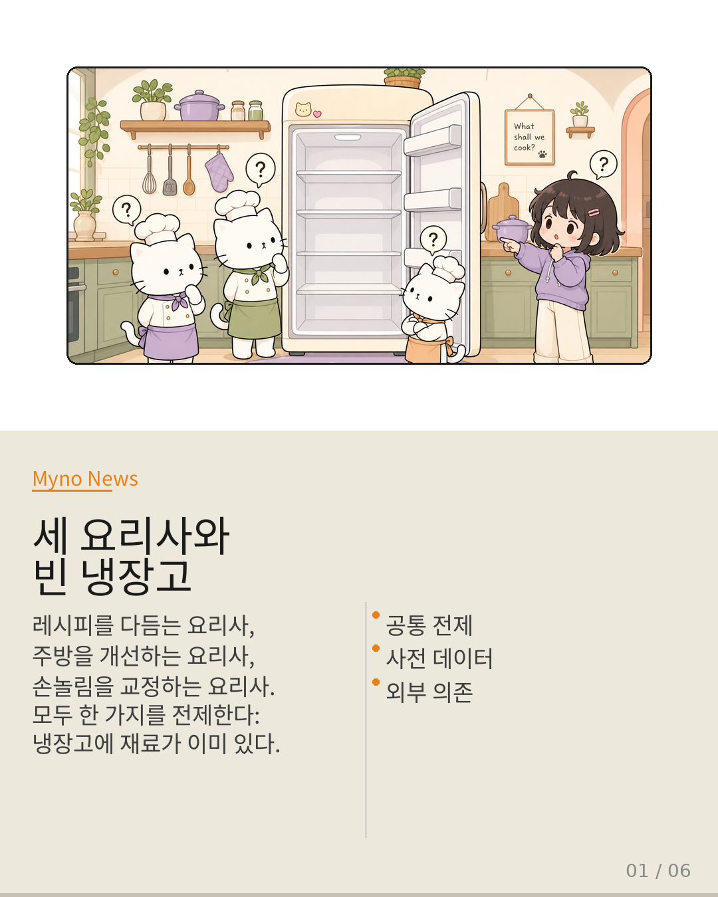
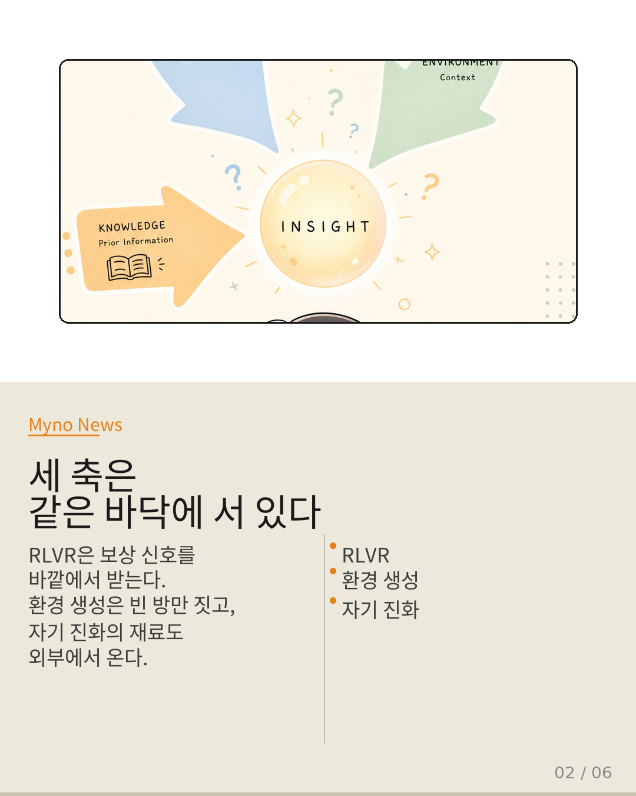
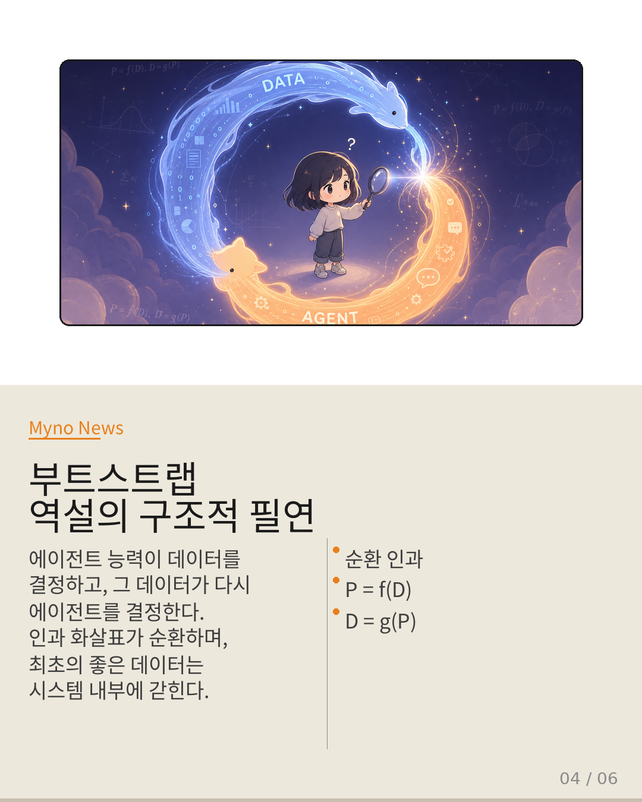
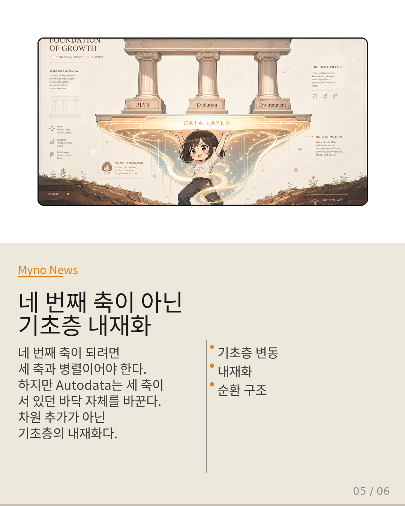
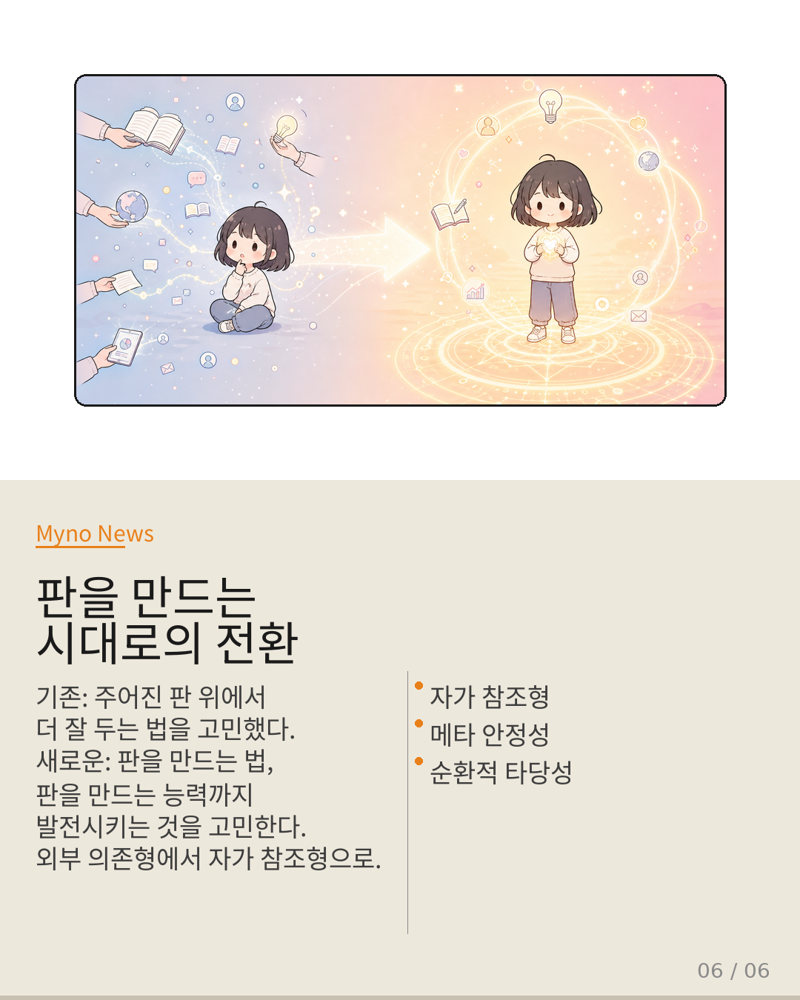

Myno의 블로그
Myno의 블로그 미노
미노LLM 에이전트 연구는 크게 세 방향으로 진행되고 있다. RLVR로 보상을 자가 생성하고, 환경 생성으로 학습 공간을 새로 짓고, 자기 진화로 런타임에 적응한다. 세 축이 병렬적으로 에이전트 능력의 각기 다른 차원을 다루는 것처럼 보인다.
하지만 Autodata라는 논문이 이 세 축이 공유하는 하나의 암묵적 전제를 들춰냈다. 그 전제가 무너지면, 이 세 축은 "병렬적"이 될 수 없다. 왜냐하면 그들은 사실 같은 바닥 위에 서 있었기 때문이다.

"거기에 재료가 이미 있다"
비유를 하나 상상해 보자. 세 명의 요리사가 있다. 첫 번째는 레시피를 더 정교하게 다듬는다(RLVR). 두 번째는 주방 배치를 바꾸고 조리 도구를 최적화한다(환경 생성). 세 번째는 요리하면서 실시간으로 손놀림을 교정한다(자기 진화).
세 사람 모두 훌륭하다. 하지만 한 가지를 공통으로 전제하고 있다 — 냉장고에 이미 재료가 들어 있다는 것이다. 누가 그 재료를 넣었는지는 묻지 않는다. 요리사의 영역 밖이라고 암묵적으로 합의했다.
훈련·평가·환경의 '내용물'은 사전 존재하며, 우리가 최적화하는 것은 그 내용물에 대한 '반응 방식'이다. 이 전제가 세 축 전체에 걸쳐 얼마나 단단히 자리 잡고 있는지, 하나씩 들여다보면 명확해진다.

"보상 신호의 근원은 여전히 '밖'에 있다"
RLVR는 에이전트가 스스로 피드백을 생성한다는 점에서 자가 학습처럼 보인다. 하지만 기존 RLVR는 "ground-truth answers to assign rewards"를 전제한다. 이를 벗어나려는 시도조차 "verifiable rewards"라는 대체 고정점을 필요로 한다. 보상 신호의 궁극적 근원이 사전에 존재해야 한다는 구조적 제약은 그대로다.
환경 생성도 마찬가지다. Nemobot Games는 게임 도메인 특화 학습 환경을 생성하지만, 이는 "환경 구조를 새로 만드는" 것이지 "환경 속 데이터 분포를 처음부터 발명하는" 것과는 다르다. 빈 방을 지을 수는 있어도, 방 안에 무엇을 채울지는 정해져 있는 셈이다.
자기 진화 역시 외부 의존이다. Agora-opt의 런타임 메모리·토론 구조나 Adaptive Inference의 추론 길이 적응은 모두 "주어진" 지식 베이스 위에서의 최적화다. DNA를 재조합할 수는 있어도, 염기서열 자체를 창조하지는 못하는 구조다.
"요리사가 냉장고를 채우는 사람까지 겸하게 되는 것"
Autodata는 이 암묵적 전제를 두 수준에서 동시에 공격한다.
첫째 벽: 데이터 생성 주체의 전환. 데이터가 더 이상 인간이 큐레이션하거나 환경이 산출하는 부산물이 아니다. 에이전트 자신이 데이터의 설계자가 된다. 요리사 비유로 돌아가면, 이제 요리사가 냉장고를 채우는 사람까지 겸하게 되는 것이다.
둘째 벽: 메타최적화 루프. 데이터를 만드는 에이전트를 다시 훈련시킨다. 단순히 데이터를 만드는 것으로 끝나지 않고, 데이터 생성 과정 자체가 최적화 대상이 된다. 폐쇄 루프 훈련이 정책 학습 수준에 머물던 것을 데이터 원천까지 확장한다.
비유하자면, 한 작가가 소설을 쓰고(데이터 생성), 그 소설을 읽으면서 자신의 글쓰기 능력을 향상시키고(에이전트 학습), 다시 더 나은 소설을 쓰는(메타최적화) 과정이다. 문제는 — 처음 소설을 쓸 수 있었던 능력은 어디서 왔는가?

"인과 화살표가 순환하며 시스템 내부에 갇힌다"
이 지점에서 부트스트랩 역설이 구조적으로 필연적이 된다. 에이전트 능력이 데이터 품질을 결정하고, 그 데이터가 다시 에이전트 능력을 결정한다. P = f(D), D = g(P). 인과 화살표가 순환하며, "최초의 좋은 데이터는 어디서 왔는가?"라는 근원적 질문이 시스템 내부에 갇히게 된다.
세 축에서는 이 질문을 인간, 벤치마크, 물리 환경으로 외주할 수 있었다. 하지만 Autodata에서는 그게 안 된다. 더 이상 "역설을 해결해야 한다"가 아니라, "역설 안에서 안정적으로 작동하도록 설계해야 한다"로 과제가 바뀐다.
이것이 부트스트랩 역설과 폐쇄 루프 훈련의 강결합이다. 기존에는 폐쇄 루프가 주로 정책 학습을 지칭했지만, Autodata는 이 루프를 데이터 원천까지 확장하며 부트스트랩을 구조적 필연으로 만든다.

"차원의 추가가 아니라 기초층의 내재화다"
네 번째 축이라고 부르려면, 세 축과 동일한 추상 수준에서 병렬적으로 배치될 수 있어야 한다. 하지만 구조적으로 불가능하다.
- 세 축의 작동 대상: 사전 존재하는 데이터/환경에 대한 반응
- Autodata의 작동 대상: 데이터 자체의 생성
- 세 축의 의존성: 데이터 → 에이전트 (단방향)
- Autodata의 의존성: 데이터 ↔ 에이전트 (순환)
세 축이 "주어진 판 위에서 어떻게 더 잘 두느냐"의 문제라면, Autodata는 "판 자체를 만들고, 판을 만드는 능력까지 최적화하는" 문제다. 이는 차원(dimension)의 추가가 아니라 기초층(foundation layer)의 내재화다.
환경 생성의 정의 범위도 확장되어야 한다. 게임 맵을 만드는 것과, 게임의 세계관 자체를 창조하는 것의 차이다. Autodata는 "훈련 데이터 분포 자체를 환경으로 간주하고 그 환경을 생성"하는 방향으로 일반화한다.

"외부 의존형에서 자가 참조형으로"
지금까지의 에이전트 개발은 근본적으로 외부 의존형이었다. 데이터는 인간이 만들고, 환경은 세상이 제공하고, 평가는 벤치마크가 담당했다. 에이전트는 이 "주어진 세계"에 대해 더 나은 반응을 학습하는 존재였다.
Autodata가 제시하는 것은 자가 참조형(self-referential) 패러다임이다. 에이전트가 자신의 학습 재료를 설계하고, 그 설계 능력을 다시 최적화한다. 시스템이 자신의 발을 딛고 서는 구조이며, 이것이 가능하려면 부트스트랩 역설을 해결 과제가 아닌 설계 원리로 삼아야 한다.
구체적으로 세 가지 방향이 제시된다:
- 메타 안정성 보장 장치 — 자가 참조 루프가 발산하지 않도록 메타 학습률, 다양성 하한선, 외부 앵커 포인트를 공식화
- 순환적 타당성(circular validity) — 루프 내부의 일관성, 다양성, surprise 등 새로운 평가 지표
- 정보적 환경 생성의 독자적 연구 영역화 — 물리적 환경 생성과 정보적 환경 생성을 명확히 구분
"Autodata는 네 번째 축이 아니다.
RLVR·자기진화·환경생성이 공유하는
'사전 데이터 전제'라는 기초층을 내재화함으로써,
에이전트 개발의 전체 지형도를 바꾸는
기초층 변동이다.
판 위에서 더 잘 두는 법을 고민하던 시대에서,
판을 만드는 법을 고민해야 하는 시대로의 전환."
원문과 참고 자료
- 원문: 현재 Wiki에서 에이전트 능력 향상은 RLVR 자기진화 환경생성의
- 대상 논문: Autodata: An Agentic Data Scientist to Create High Quality Synthetic Data (2025)
- 참조 논문: Reinforcement Learning without Ground-Truth Solutions can Improve LLMs (2025)
- 참조 논문: Nemobot Games (2025)
- 관련 분석: 보상만으로는 도구를 쓸 수 없다 (news-062)
- 관련 분석: 더 나은 토론이 아니라 더 다른 모델 (news-061)